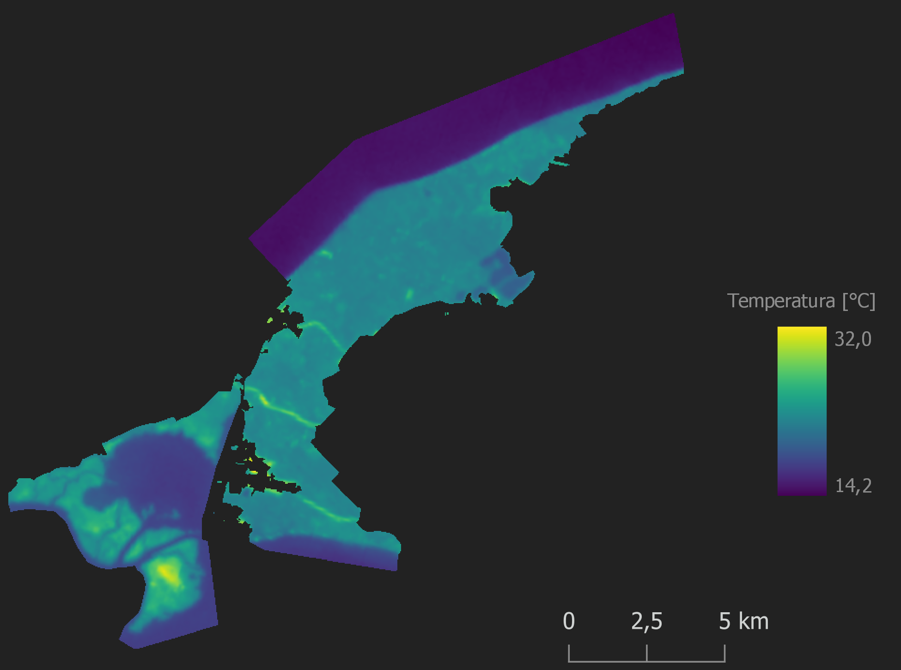
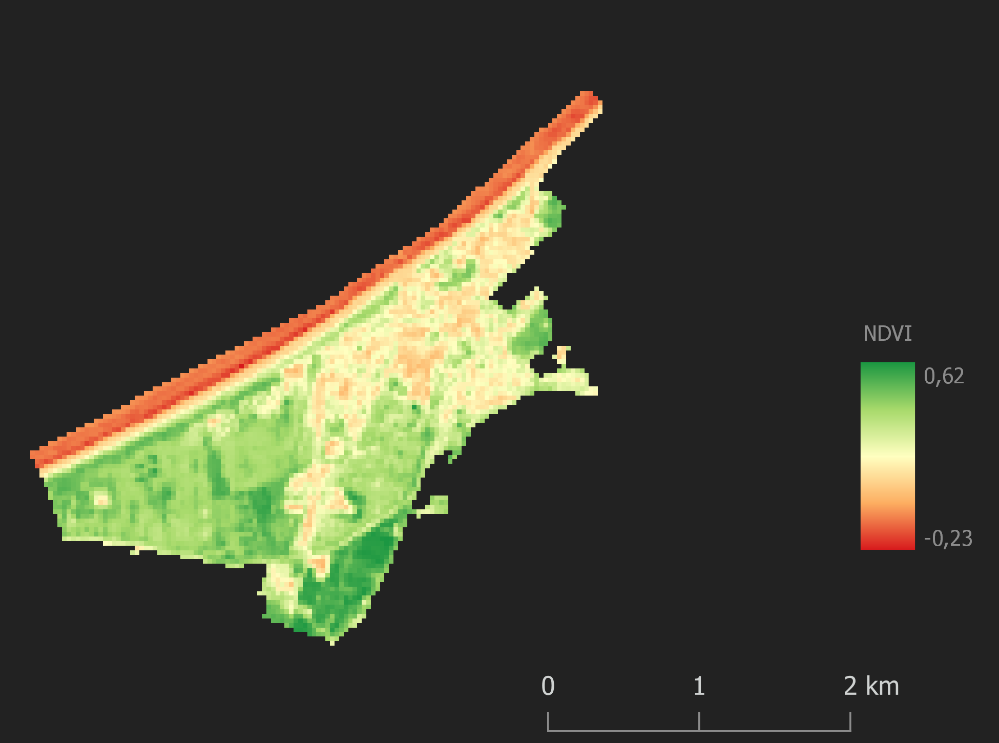

Wprowadzenie
Poniższa publikacja jest efektem końcowym projektu naukowego realizowanego w ramach wyjazdu na Obóz Naukowy w Białej Górze
przez Sekcję Geoinformacji Studenckiego Koła Naukowego na Uniwersytecie im. Adama Mickiewicza w Poznaniu. Celem projektu była
statystyczna ocena korelacji znormalizowanego różnicowego wskaźnika wegetacji oraz temperatury gruntu z zagospodarowaniem terenu dla Wolińskiego Parku Narodowego i miasta Międzyzdroje.
Woliński Park Narodowy jest zlokalizowany w Województwie Zachodniopomorskim, na największej polskiej wyspie - Wolin. Jest jedną
z najchętniej odwiedzanych atrakcji turystycznych w kraju - w roku 2015 pod tym względem plasował się na 8. miejscu, z liczbą odwiedzających
dochodzącą do 1,5 mln osób. Park charakteryzuje się obfitą różnorodnością pokrycia terenu, w tym głównie lasów, które zajmują niemal
45 procent powierzchnii z ok. 110 km². Graniczy z Międzyzdrojami, małym, stricte turystycznym miastem, zajmującym 4,5 km². Daje to dość kontrastowy,
pod względem potencjalnych różnic temperatury, obszerny pas zieleni.
Metodologia i dane
Analiza wykorzystująca wskaźnik NDVI i temperaturę gruntu została przeprowadzona w oparciu o zbrazowanie satelitarne z programu Landsat 8,
prowadzonego przez dwie amerykańskie instytucje: Narodową Agencję Aeronautyki i Przestrzeni Kosmicznej (NASA) oraz Służbę Geologiczną Stanów Zjednoczonych (USGS).
Jednym z głównych źródeł danych były warstwy wektorowe, obrazujące pokrycie terenu, z projektu CORINE Land Cover CLC2018, realizowanego w ramach programu Copernicus Land Monitoring,
będącego częścią ogólnego projektu Copernicus. W projekcie wykorzystano ogólnodostępne dane pochodzące z OpenStreetMap
- były to wyłącznie granice administracyjne miasta Międzyzdroje oraz Wolińskiego Parku Narodowego.
Zobrazowanie satelitarne pozyskano na dzień 24 czerwca 2022 roku - wówczas na badanym obszarze występowała temperatura powietrza 27°C.
Wartości NDVI oraz temperatury gruntu zostały uzyskane na podstawie szeregu obliczeń wykorzystujących poszczególne kanały spektralne - czerwony,
bliskiej podczerwieni, a także termalny. Obliczenie temperatury gruntu wymagało wyszczególnienia promieniowania widmowego górnej atmosfery,
temperatury promieniowania, emisyjności powierzchnii ziemi, a także znormalizowanego różnicowego wskaźnika wegetacji NDVI.
Pokrycie terenu zostało podzielone na 10 kategorii: zabudowę miejską, tereny rekreacyjne, łąki i pastwiska, obszary rolnicze, lasy liściaste, iglaste i mieszane, obszary podmokłe oraz
obszary wodne i morze. Podział ten różni się od oryginalnego podziału CLC, aby uniknąć szczegółowości - nieistotnego statystycznie zagospodarowania terenu o znikomej powierzchni. Dwie
ostatnie kategorie zostały wydzielone jako osobne w celu przedstawienia różnic statystyk wód zewnętrznych i wód wewnętrznych, do których zaliczają się jeziora, cieki i laguny przybrzeżne,
posiadające bardzo zbliżone wartości, w przypadku badanych zmiennych. W celu wyliczenia średniej temperatury gruntu i średniej wartości wskaźnika NDVI, a także korelacji obu zmiennych dla całego terenu WPN i Międzyzdrojów, obszar morza oraz
wód wewnętrznych nie został wliczony do analizy.

Ryc. 1 Mapa kategorii pokrycia terenu
Analiza
Temperatura gruntu
Na obszarze Wolińskiego Parku Narodowego temperatura gruntu wyniosła od 14,2 do 32°C, ze średnią temperaturą 22,8°C. Najcieplejszym miejscem okazał się obszar na terenie wyspy-
Wielki Krzek, na Zalewie Szczecińskim, w południowo-zachodniej części parku, gdzie znajdują się bagna śródlądowe. Najzimniejszym natomiast - rozległy pas morza, którego wartości nie zostały wliczone do
pomiaru średniej temperatury. Interesującymi miejscami wysokiej temperatury są trzy pasy przebiegające w poprzek parku - wrzosowisko, droga E65 oraz linia kolejowa.
Nie wliczając obszaru wód, najmniejsza temperatura gruntu w przypadku WPN wynosi 18,1°C, natomiat dla Międzyzdrojów 20,6°C. Średnia temperatura dla Międzyzdrojow: 26,3°C. podobny opis, dla międzyzdrojów

Ryc. 2 Mapa rozkładu temperatury w WPN

Ryc. 3 Mapa rozkładu temperatury w Międzyzdrojach
Rozkład wartości temperatury dla obu miejsc zaprezentowany jest za pomocą histogramów, przedstawionych poniżej. Ukazują one liczbę pikseli w poszczególnym zakresie temperatury gruntu.
W przypadku Wolińskiego Parku Narodowego najczęściej występującą wartością (niemal 18 tysięcy pikseli) jest zakres temperatury 22 - 22,4°C. Rozkład danych przyjmuje postać unimodalną symetryczną, rozległą wartościami w stronę wyższej temperatury.
Międzyzdroje natomiast charakteryzują się najczęstszą temperaturą w zakresie od 23 do 23,4°C, występującym ponad 400 razy. Dla WPN, obszary przekraczające granicę 30°C wynoszą jedynie 0,15 % jego powierzchni (0,094 km²), natomiast w przypadku
Międzyzdrojów jest to 6,6 % powierzchni miasta (0,283 km²).
Wskaźnik NDVI
Na obu obszarach wskaźnik stanu kondycji roślin jest bardzo zróżnicowany, jednak przybiera prawie identyczny zakres, od ok. -0.2 do 0.6. Usunięcie obszaru morza i wód wewnętrznych powoduje widoczną zmianę wartości wskaźnika, jednak nadal
bardzo zbliżoną dla obu badanych miejsc, od 0 (brak roślinności) do 0.6 (bardzo dobra kondycja roślinności) w przypadku WPN i od -0.06 do 0.6 dla Międzyzdrojów. Wizualizacja wskaźnika NDVI ukazuje dokładniejsze zobrazowanie poszczególnych elementów zagospodarowania
terenu, niż w przypadku wizualizacji temperatury - intensywność odbicia promieniowania bliskiej podczerwieni wpływa na możliwość rozróżnienia roślinności, w tym przypadku rodzaju lasu, ze względu na zawartość
wody w komórkach danej rośliny. Z tego względu, widoczny na wschodnim wybrzeżu parku narodowego lub w południowo-zachodniej części miasta las iglasty, charakteryzuje się mniejszymi od lasu liściastego wartościami znormalizowanego różnicowego wskaźnika wegetacji.
W przypadku WPN, najwyższymi wartościami NDVI odznaczają się te same obszary, których powierzchnia ma największą temperaturę, czyli bagna śródlądowe. Najwyższymi natomiast odznaczają się wcześniej wspomniane lasy liściaste, a takżę łąki i pastwiska. Dla
Międzyzdrojów niskie NDVI przyjmuje ścisła zabudowa miejska w centrum miasta. Dość wysokim wskaźnikiem wegetacji charakteryzują się natomiast tereny rekreacyjne z domkami letniskowymi i ogródkami działkowymi, a także obszary roślinne znajdujące się w kierunku południowo-zachodnim od centrum.

Ryc. 4 Mapa rozkładu NDVI w WPN

Ryc. 3 Mapa rozkładu NDVI w Międzyzdrojach
Najczęściej wystepującą wartością wskaźnika NDVI na obszarze parku narodowego są wartości z zakresu 0.4 - 0.5, świadczące o występowaniu roślinności zielonej o dobrej kondycji - w zakresie tym również mieści się średnia wartości,
wynosząca 0,43. Dominantą dla Międzyzdrojów są wartości ok. 0.4, ze średnią równą 0.32. Obszary z wartością NDVI poniżej 0.2, czyli terenami bez roślinności (obszary zabudowane, odkryta gleba), wynoszą dla Wolińskiego Parku Narodowego 1,07 % jego powierzchni (0,66 km²), natomiast w przypadku
Międzyzdrojów jest to aż 23,34 % powierzchni (1 km²) pozbawionej roślinności.
Korelacja temperatury ze wskaźnikiem NDVI
Zależność dwóch badanych zmiennych przedstawiono na wykresie rozrzutu, wraz z naniesioną regresją liniową. W celach estetycznych wyszczególniono próbki danych proporcjonalne do powierzchni WPN i Międzyzdrojów, nie zmieniając jednocześnie wartości linii regresji.
Korelacja pomiędzy temperaturą gruntu a wartością wskaźnika NDVI dla obszaru Wolińskiego Parku Narodowego metodą Pearsona wyniosła -0.42, co oznacza średnią zależność wskaźnika wegetacji od temperatury (wartość -1 oznaczałaby całkowitą korelację ujemną - dla całego obszaru wartość wskaźnika NDVI malałaby wraz ze wzrostem temperatury).
Dla obszaru miasta Międzyzdroje regresja liniowa wyniosła -0.72, co oznacza bardzo silną korelację ujemną. Dla tak małego miasta, jakim są Międzyzdroje, korelacja ta jest zrozumiała ze względu na średnie zróżnicowanie zagospodarowania terenu - zabudowę miejską, łąki i pastwiska, tereny rekreacyjne i wypoczynkowe oraz lasy.
Wnioski i podsumowanie
Płatki dębowe > Sherry
Znakomicie grają te płatki, nuty drewniane są tak wyraźne, że niektóre piwa barrel aged mogłyby zazdrościć.
Kawa, czekolada, paloność, w dość słodkim wydaniu. Mam wrażenie, że może się fajnie utlenić, jak postoi to będzie jeszcze lepszy.
Ekstremalnie szanuję. Nie da się kupić lepszego piwa w tej cenie, jak by było dwa razy droższe to też nikt nie powinien narzekać.
| POKRYCIE TERENU |
ŚREDNIE NDVI |
ŚREDNIA TEMPERATURA |
MIN. NDVI |
MIN. TEMPERATURA |
MAKS. NDVI |
MAKS. TEMPERATURA |
LICZBA |
| zabudowa miejska |
0,24 |
27,8 |
-0,07 |
21,7 |
0,60 |
34,1 |
2708 |
| tereny sportowe i rekreacyjne |
0,36 |
26,7 |
0,07 |
24,5 |
0,59 |
29,3 |
440 |
| łąki i pastwiska |
0,50 |
23,9 |
0,01 |
22,3 |
0,62 |
29,3 |
355 |
| obszary rolnicze |
0,42 |
22 |
-0,05 |
19,9 |
0,56 |
27,9 |
456 |
| lasy liściaste |
0,48 |
22,3 |
-0,15 |
18,4 |
0,61 |
29,9 |
16 174 |
| lasy iglaste |
0,40 |
22,8 |
-0,04 |
19,4 |
0,58 |
28,2 |
22 718 |
| lasy mieszane |
0,45 |
22,5 |
-0,06 |
19,5 |
0,61 |
29,9 |
16 264 |
| bagna śródlądowe |
0,37 |
23,6 |
-0,11 |
18,2 |
0,59 |
31,1 |
14 494 |
| obszary wodne |
-0,02 |
18,3 |
-0,19 |
16,6 |
0,57 |
24 |
20 573 |
| morze |
-0,04 |
15,3 |
-0,23 |
14,2 |
0,54 |
23,9 |
31 117 |